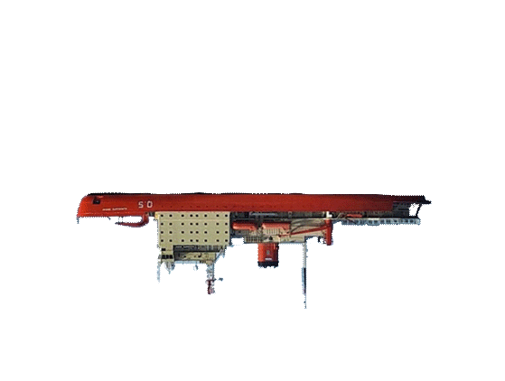
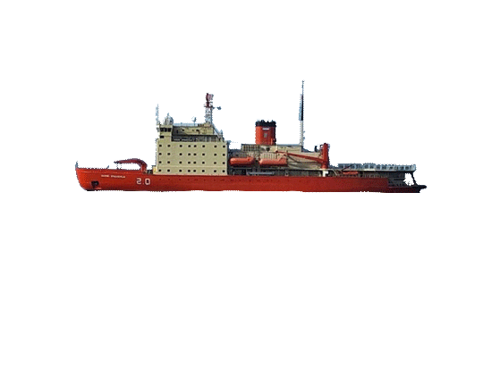
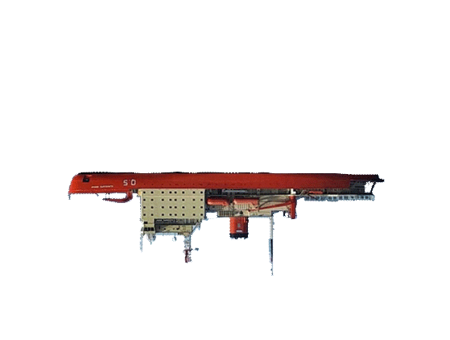
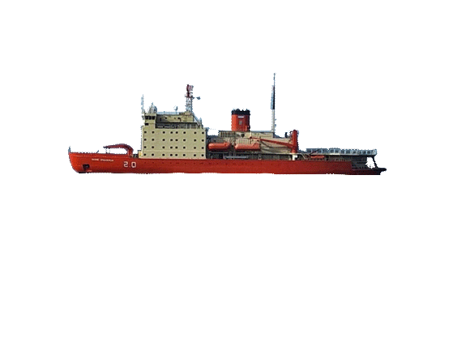
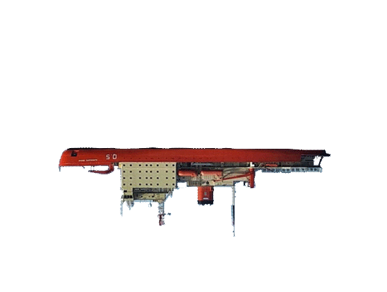
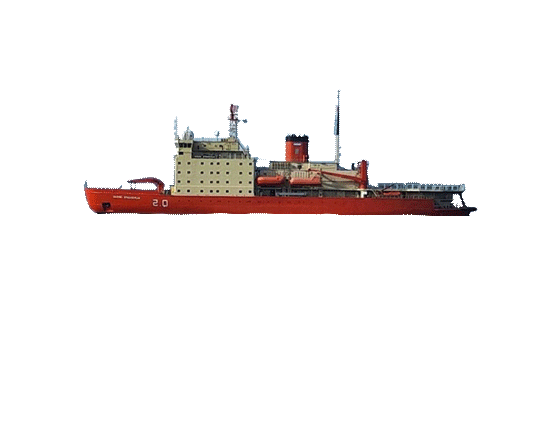
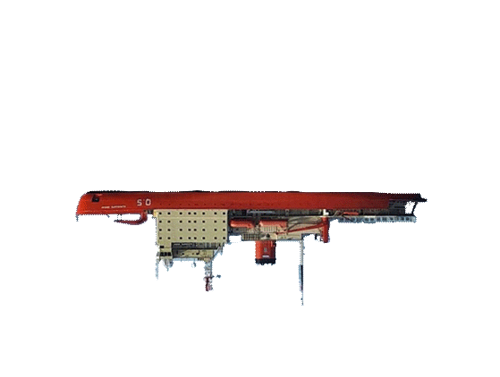
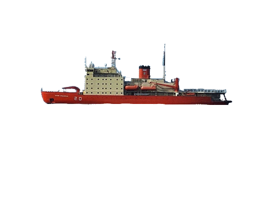

 



x


José María Sobral (1880-1961) fue el primer argentino en invernar en la Antártida. Participó en la expedición científica sueca liderada por el Dr. Otto Nordenskjöld entre 1901 y 1903. Tras quedar aislados en el polo, fueron rescatados por la corbeta Uruguay. A su regreso, solicitó su baja de la Armada y emigró a Suecia para estudiar geología, convirtiéndose en el primer geólogo argentino con título universitario.
Lectura: Carolina Carman
x

Jorge Leal (1921-2017) lideró expediciones a la Antártida en los años 50 y 60 para reafirmar la soberanía argentina. En 1965, encabezó la exitosa Operación 90, que culminó con la llegada al Polo Sur y el izado de la bandera argentina. Su contribución fue reconocida como una hazaña nacional.
Lectura: Sofía Ehrenhaus
x
José Manuel Moneta (1900-1972) fue un diplomático y técnico del Servicio Meteorológico Nacional de Argentina. Participó en las expediciones científicas que se realizaron en el Observatorio Meteorológico de las islas Orcadas del Sur en los años 1923, 1925, 1927 y 1929, las dos últimas como Jefe de la expedición. Actualmente, la casa-habitación en la que convivió con sus compañeros durante las distintas expediciones lleva su nombre: Casa Moneta, una reliquia histórica de las islas Orcadas.
Lectura: Marcela Narvaja
x

Hugo Acuña (1885-1953) integró, con solo 18 años, la primera expedición argentina a las Islas Orcadas del Sur, en 1904. Como empleado de la División Ganadería del Ministerio de Agricultura de la Nación, su función era la de colaborar en meteorología y, como enviado del Correo Argentino, habilitar la primera estafeta postal, para la cual creó el Correo Antártico. Fue, además, el primer argentino en izar nuestra bandera en la Antártida, más precisamente en la isla Laurie, en las Orcadas del Sur.
Lectura: Melisa Aita Camps
x
Alberto Williams (1862-1952) fue un compositor argentino, referente del nacionalismo musical. En 1923 realizó un viaje de turismo a los canales fueguinos en el transatlántico Cap Polonio. La travesía resultó una fuente de inspiración para la creación de una serie de piezas musicales sobre los paisajes patagónicos, fueguinos y antárticos. A la manera de apuntes de viaje, Williams tomó notas en formato musical de las impresiones que le generaron estos vastos territorios del sur austral.
Fagus Antárticos
Pingüinos empollando
Ventisquero Azulado
x
La presente exposición es resultado del esfuerzo conjunto de estas instituciones y organismos.